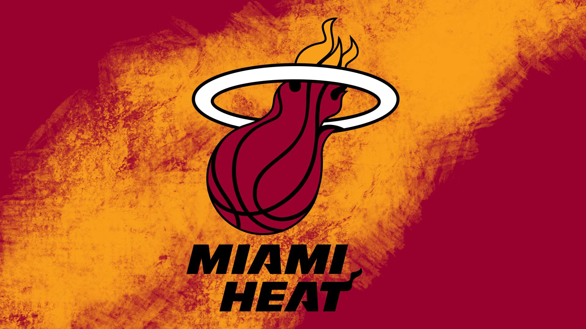

Basketball is a team sport in which two teams, most commonly of five players each, opposing one another on a rectangular court, compete with the primary objective of shooting a basketball (approximately 9.4 inches (24 cm) in diameter) through the defender's hoop (a basket 18 inches (46 cm) in diameter mounted 10 feet (3.048 m) high to a backboard at each end of the court), while preventing the opposing team from shooting through their own hoop. A field goal is worth two points, unless made from behind the three-point line, when it is worth three. After a foul, timed play stops and the player fouled or designated to shoot a technical foul is given one, two or three one-point free throws. The team with the most points at the end of the game wins, but if regulation play expires with the score tied, an additional period of play (overtime) is mandated. Players advance the ball by bouncing it while walking or running (dribbling) or by passing it to a teammate, both of which require considerable skill. On offense, players may use a variety of shots – the layup, the jump shot, or a dunk; on defense, they may steal the ball from a dribbler, intercept passes, or block shots; either offense or defense may collect a rebound, that is, a missed shot that bounces from rim or backboard. It is a violation to lift or drag one's pivot foot without dribbling the ball, to carry it, or to hold the ball with both hands then resume dribbling. The five players on each side fall into five playing positions. The tallest player is usually the center, the second-tallest and strongest is the power forward, a slightly shorter but more agile player is the small forward, and the shortest players or the best ball handlers are the shooting guard and the point guard, who implement the coach's game plan by managing the execution of offensive and defensive plays (player positioning). Informally, players may play three-on-three, two-on-two, and one-on-one. Invented in 1891 by Canadian-American gym teacher James Naismith in Springfield, Massachusetts, in the United States, basketball has evolved to become one of the world's most popular and widely viewed sports.[1][2] The National Basketball Association (NBA) is the most significant professional basketball league in the world in terms of popularity, salaries, talent, and level of competition[3][4] (drawing most of its talent from U.S. college basketball). Outside North America, the top clubs from national leagues qualify to continental championships such as the EuroLeague and the Basketball Champions League Americas. The FIBA Basketball World Cup and Men's Olympic Basketball Tournament are the major international events of the sport and attract top national teams from around the world. Each continent hosts regional competitions for national teams, like EuroBasket and FIBA AmeriCup. The FIBA Women's Basketball World Cup and Women's Olympic Basketball Tournament feature top national teams from continental championships. The main North American league is the WNBA (NCAA Women's Division I Basketball Championship is also popular), whereas the strongest European clubs participate in the EuroLeague Women.
The Miami Heat are an American professional basketball team based in Miami. The Heat compete in the National Basketball Association (NBA) as a member of the Southeast Division of the Eastern Conference. The club plays its home games at Kaseya Center, and has won three NBA championships. The franchise began play in the 1988–89 season as an expansion team. After a period of mediocrity, the Heat gained relevance in the mid-1990s when Pat Riley became team president and head coach. Riley constructed the trades for Alonzo Mourning and Tim Hardaway, which propelled the team into playoff contention. Mourning and Hardaway led the Heat to four consecutive division titles prior to their departures in 2001 and 2002, respectively. The team also experienced success after drafting Dwyane Wade in 2003. Led by Wade, following a trade for former NBA Most Valuable Player (MVP) Shaquille O'Neal, the Heat won their first NBA title in 2006, after Riley named himself head coach for a second stint. After the departure of O'Neal two years later, the team struggled for the remainder of the 2000s. Riley remained team president, but was replaced as head coach by Erik Spoelstra. In 2010, the Heat formed a superteam through the signing of reigning league MVP LeBron James and NBA All-Star Chris Bosh, creating the "Big Three" along with Wade. During their four years together, Spoelstra, James, Wade, and Bosh led the Heat to the NBA Finals in every season, culminating in back-to-back championships in 2012 and 2013. All three departed by 2016, and the team entered a period of rebuilding. After acquiring All-Star Jimmy Butler in 2019, the Heat returned to the NBA Finals in 2020 and 2023. The Heat acquired six-time NBA All-Star Kyle Lowry in 2021. The Heat hold the record for the NBA's third-longest winning streak, 27 straight games, set during the 2012–13 season. Seven Hall of Famers have played for Miami, and James won two consecutive NBA MVP Awards while playing for the team.
The Miami Heat are an American professional basketball team based in Miami. The Heat compete in the National Basketball Association (NBA) as a member of the Southeast Division of the Eastern Conference. The club plays its home games at Kaseya Center, and has won three NBA championships. The franchise began play in the 1988–89 season as an expansion team. After a period of mediocrity, the Heat gained relevance in the mid-1990s when Pat Riley became team president and head coach. Riley constructed the trades for Alonzo Mourning and Tim Hardaway, which propelled the team into playoff contention. Mourning and Hardaway led the Heat to four consecutive division titles prior to their departures in 2001 and 2002, respectively. The team also experienced success after drafting Dwyane Wade in 2003. Led by Wade, following a trade for former NBA Most Valuable Player (MVP) Shaquille O'Neal, the Heat won their first NBA title in 2006, after Riley named himself head coach for a second stint. After the departure of O'Neal two years later, the team struggled for the remainder of the 2000s. Riley remained team president, but was replaced as head coach by Erik Spoelstra. In 2010, the Heat formed a superteam through the signing of reigning league MVP LeBron James and NBA All-Star Chris Bosh, creating the "Big Three" along with Wade. During their four years together, Spoelstra, James, Wade, and Bosh led the Heat to the NBA Finals in every season, culminating in back-to-back championships in 2012 and 2013. All three departed by 2016, and the team entered a period of rebuilding. After acquiring All-Star Jimmy Butler in 2019, the Heat returned to the NBA Finals in 2020 and 2023. The Heat acquired six-time NBA All-Star Kyle Lowry in 2021. The Heat hold the record for the NBA's third-longest winning streak, 27 straight games, set during the 2012–13 season. Seven Hall of Famers have played for Miami, and James won two consecutive NBA MVP Awards while playing for the team.
